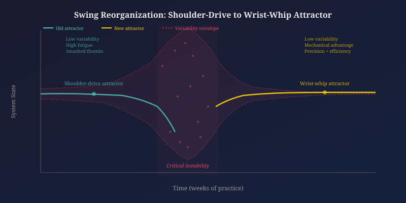

My Body Is a Lagrangian Whip
I used to work as a form carpenter. The task: drive duplex nails flush in as few hits as possible, or get sent back to ditch-digging. Nobody taught me the proximal-to-distal kinetic chain for swinging a hammer. Explanation cannot transfer that perception-action category. What I received instead was social pressure operating as Edelman's motivational value: ridicule, demotion threats, and smashed thumbs.
My early swing variability was not gradual improvement with noise. It was system-wide instability. The variability reached a critical threshold where the old pattern (shoulder-driven, muscularly inefficient, producing fatigue and repetitive stress) became unsustainable and dissolved. What replaced it was qualitatively different: third-class lever dynamics where the handle amplifies a compact wrist-elbow chain. No one prescribed this reorganization. It self-organized from the constraints of the task, the tool, and the body, just as Reeke and Edelman's device assembled "A" through coupled feature-and-trace mappings. My swing knowledge was never a representation I accessed. It was a trajectory that deepened until perturbations were absorbed rather than destabilizing.

Tie Dye and the Attractor Landscape
Tie dye makes the logic of attractor landscapes visible in physical space.
The dye-fabric system begins in a high-dimensional state space. Unbound fabric can accept dye in an indeterminate number of configurations. Folding, twisting, and binding introduce constraints that reduce degrees of freedom and channel dye migration into basins of attraction. Once dye is applied, it migrates through capillary action along paths shaped by fold topology, weave density, saturation, and temperature. The initial variability in how dye contacts fiber is the exploratory phase: the trajectory wanders the state space. As the dye sets, the system stabilizes. Color boundaries form where competing dye fronts meet at basin edges. The final pattern is a stable attractor, soft-assembled; changing any single parameter shifts the entire landscape.
I exploit this variability. There is a cathartic element to releasing the illusion that all variables can be controlled, accepting the artistic expression of noise as it exists in nature, like mandalas or fractals. Each piece is a unique trajectory through a constrained but stochastic space.
Professional artists operate differently. Through many repetitions, they develop perception-action categories for how saturation evolves over time and how specific folds channel dye behavior. Some develop a signature design unique to their accumulated knowledge, experience, and timing. Their predictions improve not because they learn rules but because their hands know the constraints. This is the deepening of attractors through repeated multimodal experience. Yet no two pieces can ever be identical, because the system is sensitive to initial conditions at every level. No template exists in the dye, the fabric, or the artist's head. The pattern self-organizes from time-locked interactions of fold geometry, dye chemistry, capillary physics, and motor decisions.
Artificial Intelligence as Degenerate Concept
"Artificial intelligence" resists a single coherent definition, paralleling Lakoff's analysis of "mother." I navigate its degeneracy depending on context. For laypersons, AI is automation and classification embedded in consumer goods and safety devices since the perceptron. When building, I think of AI as an array of neural networks, ML, DL, and RL assembled for simulation and probabilistic prediction. With peers, I speak of AI in an agentic capacity: NLP translating human intention into machine-executable code across platforms like Python and R. These models overlap without cohering. The flexibility between them is productive, not imprecise. The concept is a dynamic assembly created in the trajectory of a specific conversation for a specific purpose.
Operating Systems and Attractor Interference
Switching from Windows to macOS illustrates attractor competition in a shared domain. The goals are identical; the control parameters differ at every level: PowerShell versus bash, central binary registry versus distributed config files, inverted scroll wheels, and keyboards where Command sits where Alt sits on a PC. My deep Windows procedural knowledge produces strong attractors that actively interfere with macOS trajectories. Even now, after extended Mac use, returning to my PC triggers Command-key-position shortcuts with the Alt key. The old attractor captures the trajectory before the context-appropriate pattern asserts itself. The adaptation period was degraded performance on both systems; neither attractor set fully stable.
Pure and Applied Mathematics
Pure mathematics operates as a closed system driven by its own internal logic, structure, and aesthetic pursuits, independent of the physical world. It finds application through serendipity. Applied mathematics (statistics, modeling, simulation) attempts to answer questions, solve problems, and predict outcomes without the constraints of relying on purely empirical data. I find pure math harder by orders of magnitude because its state space is unconstrained by external problems. Applied math succeeds because the research question and the physical system provide the constraint topology within which mathematical activity stabilizes into usable knowledge.
An Array of Levers
Across four tools (a 16oz framing hammer on a vertical form, the same hammer on decking from a four-point stance, a 3lb blacksmith hammer with a 10.5" handle, and a 9lb maul with a 36" handle), each tool-task pairing demands a distinct attractor. The kinetic chain origin shifts from wrist-elbow to full-body. The constraint topology changes with mass distribution, handle length, and task geometry. But with enough experience, deeper commonalities emerge: the proximal-to-distal principle, gravity as co-contributor, the moment when the tool ceases to be a held object and becomes an extension of the arm. These are the high-level attractors that capture formerly distinct tool-specific trajectories, exactly as Thelen and Smith describe generalized knowledge emerging from specific experience.